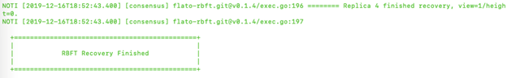

启动节点¶
保存配置¶
在启动节点前，将整个/opt/flato目录备份一下，主要是 dynamic.toml 和 ns_dynamic.toml 需要备份。
备份方法如下:
#根据实际情况修改/opt/flato
cd /opt/flato/. ./
tar zcvf ~/flato-backup.tar.gz flato
请依次备份4个节点的Flato目标安装目录，本例中就是 /opt/flato 目录。
启动节点¶
启动请再按照步骤 3.3 检查一次flato二进制程序能否正常执行。
#根据实际情况修改/opt/flato
cd /opt/flato/
./flato --version
检查完毕后，使用 start.sh 启动flato进程:
#根据实际情况修改/opt/flato
cd /opt/flato
./start.sh
#或者如果上面命令失败，尝试下面这个命令
#./flato start
依次启动4台服务器上的Flato进程。
查看日志¶
查看flato的日志，查看运行情况。
System级别日志的路径默认为：
/opt/flato/system/logs
Namespace级别日志的路径默认(以global为例)：
/opt/flato/namespaces/global/data/logsls
若Namespace__级别日志显示如下信息__，即表示节点都连上，flato平台部署启动完成。

请依次检查4台服务器上的Flato日志。
失败恢复¶
若启动失败，需要使用5.1小节当中的备份进行失败恢复
将/opt/flato中的dynamic.toml和ns_dynamic.toml两个配置文件替换为备份中的相应配置文件
tar xvf ~/flato-backup.tar.gz ~/
cp ~/flato/configuration/dynamic.toml /opt/flato/configuration/dynamic.toml
cp ~/flato/configuration/global/ns_dynamic.toml /opt/flato/configuration/global/ns_dynamic.toml